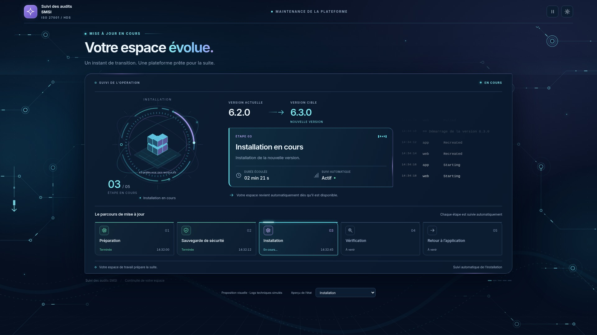
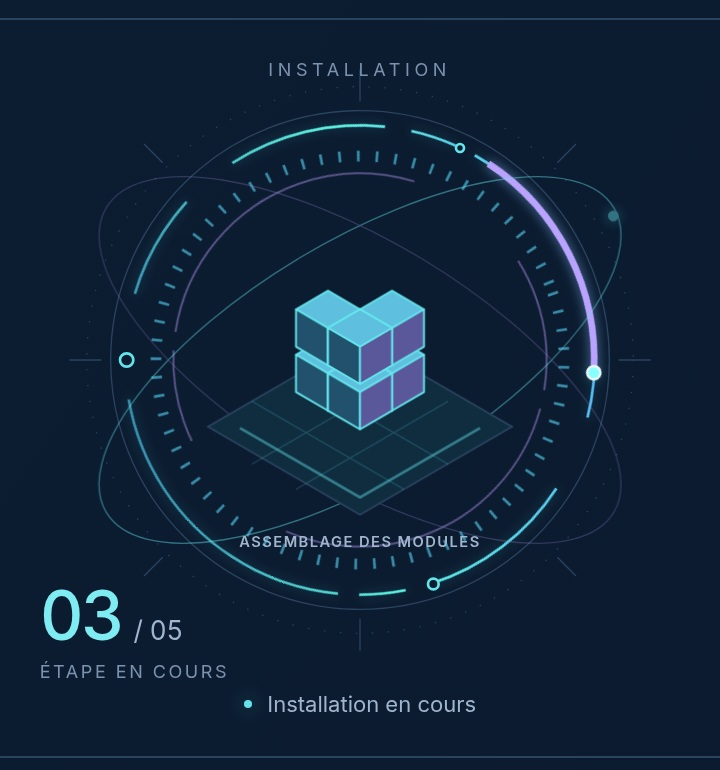
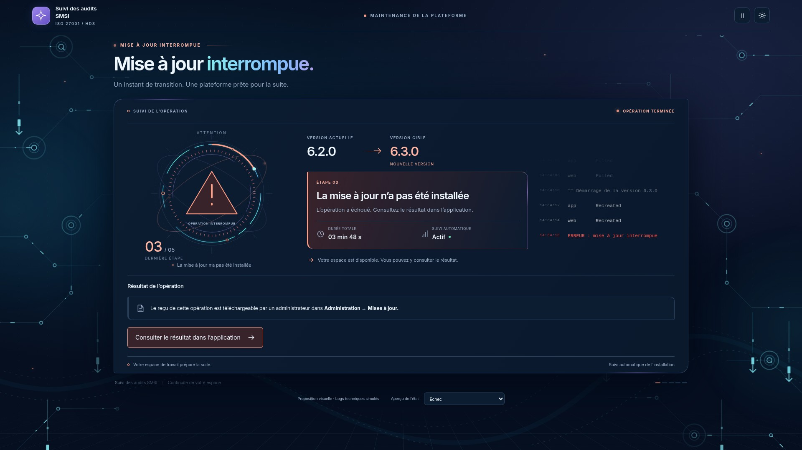
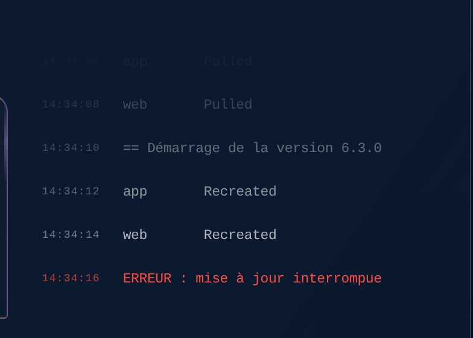
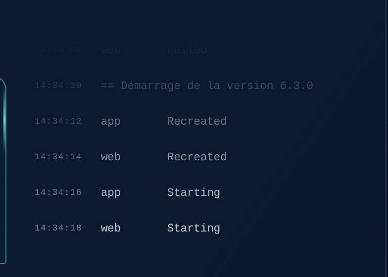
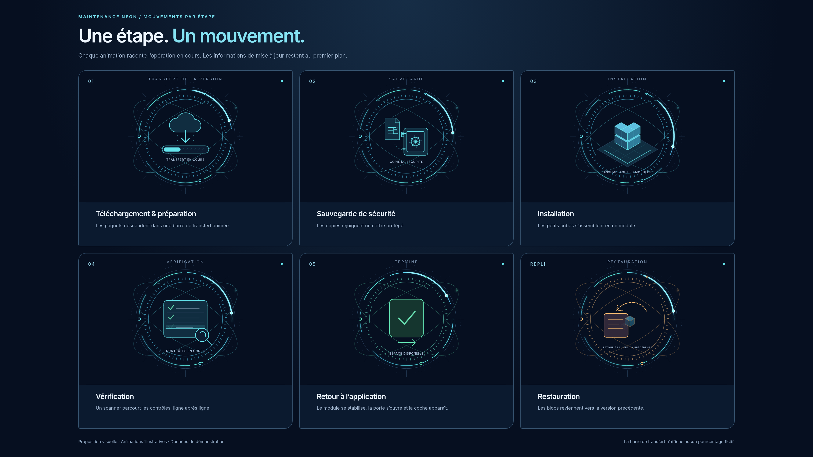

Les références pour le portage
Captures originales de maquettes, données simulées. La dernière proposition est à valider avant intégration. Les images ne prouvent ni un flux serveur ni le masquage des secrets. Aucune nouvelle vidéo produite.

Installation — composition et accent violet léger
Full HD, capture originale. Même composition que la dernière référence ; les erreurs rouges sont ajoutées dans la vue Échec.
Image originale · 1920 × 1080
Noyau et cubes — détail
Détail original à densité 2. SVG vectoriels disponibles dans la maquette.
Image originale · 720 × 770
Échec — dernière référence cumulée
Full HD original : bleu/cyan, violet léger, journal technique direct et erreurs rouges. Proposition à valider.
Image originale · 1920 × 1080
Erreur technique — détail
Message et horaire rouges dans le même flux ; aucun panneau de journal supplémentaire.
Image originale · 784 × 560
Écriture technique et fondu spatial
Référence antérieure à la touche violet et au rouge ; précise uniquement la typographie et la disposition du journal.
Image originale · 784 × 560
Six animations logiques — planche 4K
Étude antérieure au journal final et au violet. Référence des mouvements par phase uniquement, pas de la composition finale du journal.
Image originale · 3840 × 2160